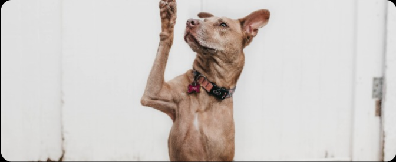
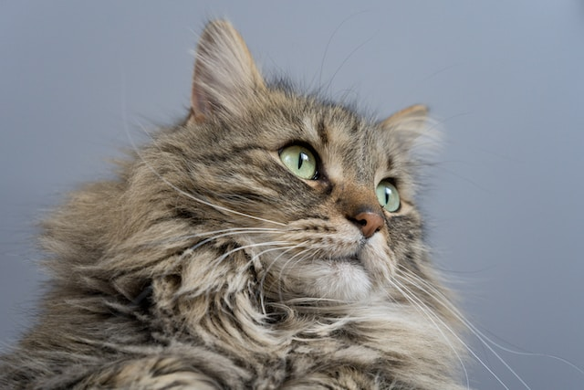
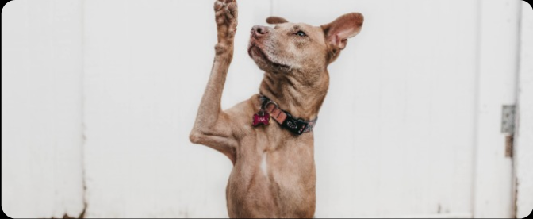
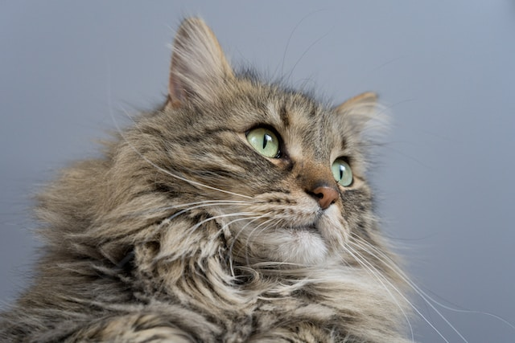
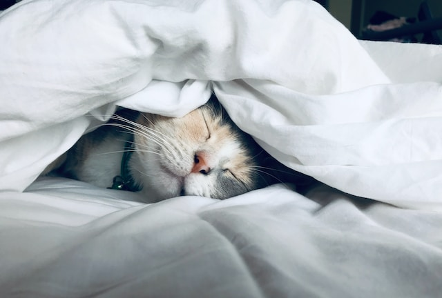
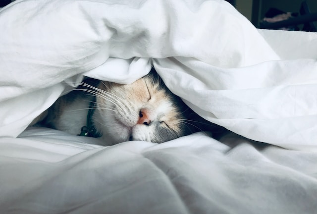

Adote um de nossos pets!
Escolha o bichinho perfeito pra você.
Toby
Este pequeno cãozinho tem uma história incrível de superação. Resgatado de situações difíceis, ele está pronto para encontrar um lar onde possa desfrutar do amor e da segurança que merece. Dê a este pequeno amigo peludo a oportunidade de uma vida feliz e segura!
- Idade: 3 anos
- Porte: pequeno
Kim
Este adorável cãozinho foi resgatado das ruas, onde enfrentou vários desafios.
Ele adora brincar e correr e está pronto para encontrar um lar repleto de carinho e
cuidados. Ajude-nos a dar a este lindo
cãozinho uma segunda chance.
- Idade: 1 ano e 7 meses
- Porte: médio

Mia e Sasha
Estas duas gatinhas incrivelmente fofas foram resgatadas em circunstâncias desafiadoras e agora estão ansiosas para encontrar uma casa onde possam desfrutar de carinho e cuidados. Adote este par adorável de gatinhas e traga ainda mais alegria à sua vida. Dois gatos são sempre melhor que um!
- Idade: 2 e 3 anos
- Porte: pequeno
 



 

Missão
- Resgate e Reabilitação: Trabalhamos incansavelmente para resgatar animais em situações de risco, oferecendo cuidados médicos, nutrição adequada e um ambiente seguro. Acreditamos que todos os animais merecem uma segunda chance.
- Promoção da Adoção Responsável: Estamos comprometidos em encontrar lares amorosos e permanentes para nossos resgatados. Fornecemos a cada adotante potencial informações e orientações para garantir que a adoção seja uma experiência positiva tanto para o animal quanto para a família.
- Conscientização e Educação: Acreditamos que a educação é fundamental para promover uma comunidade mais compassiva em relação aos animais. Oferecemos programas educacionais e recursos para incentivar a adoção responsável, a esterilização e a prevenção do abuso de animais.
Valores
- Amor e Respeito: Tratamos cada animal com amor, respeito e compaixão, independentemente de sua origem ou história.
- Transparência: Valorizamos a transparência em todas as nossas ações e nos relacionamentos com nossos apoiadores, voluntários e adotantes.
- Dedicação: Estamos comprometidos com a causa do resgate de animais e dedicamos nosso tempo e esforço para garantir o bem-estar dos animais sob nossa responsabilidade.
- Comunidade: Acreditamos no poder da comunidade para criar mudanças positivas e trabalhamos em parceria com pessoas e organizações que compartilham nossa missão.
Quem Somos
A 4Patas está comprometida em fazer a diferença na vida dos animais necessitados. Ajude-nos
a
construir um futuro mais brilhante para eles.
Se você estiver interessado em apoiar
nossa
missão,
adotar um animal ou fazer parte de nossa equipe
de voluntários, entre em contato conosco.
Juntos, podemos criar um mundo mais compassivo para todos
os seres vivos.
Informações de Contato:
Endereço da Sede:
Rua dos Animais Felizes
Bairro dos Amigos dos Animais
Cidade dos Peludos, PA
CEP: 12345-678
Telefone: (123) 456-7890
E-mail: contato@instituicaoresgateanimais.org